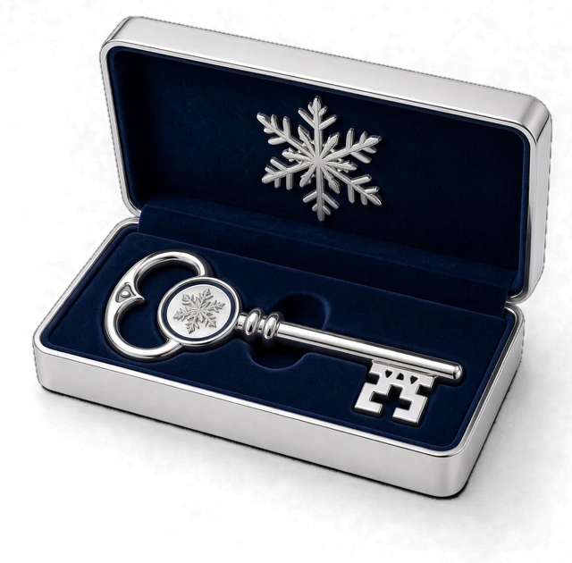
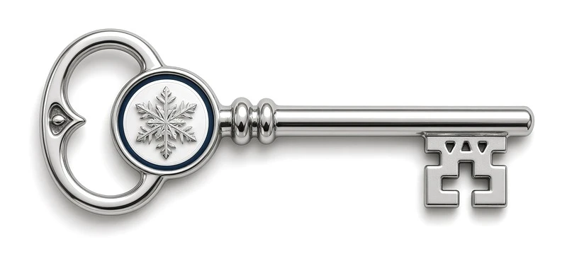

Lars Hansen[Person 2656447], Advokatfirmaet Nordlys AS[Arbeidsplass 5521093]
E-post
lars.hansen@nordlys.test[E-post 3278678]
Telefon
922 11 334[Telefon 6289990]
Begrunnelse
Vergehaver har vært innlagt for depresjon siden januar og trenger hjelp med økonomien.[Merknad 2760056] Vergemålet omfatter forvaltning av midler på konto 1503 42 17886[Kontonummer 7719741].
Vergemålet gjelder fra vedtaksdato. Vedtaket kan påklages innen tre uker.
Renser «kundesaker» …Kopiene legges ved siden av. Du får beskjed når de er klare.
nå
KI-assistent
Lag et kort svar på denne meldingen:
Hei! Kan du ringe [Person 6311794] på [Telefon 6289990] i dag? Hun har flyttet til [Adresse 8950779], og lønnen skal nå gå til konto [Kontonummer 7719741].
Kopier svaret
Skriv en melding …↑
KI-en får bare kodene. Navn, telefon, adresse og konto blir på maskinen.
kundesaker
10 filer · docx, eml, jpg, md, pdf, pptx, xlsx
Med skanningKlart leser filene og merker det den finner. Du går gjennom og bestemmer.
Uten skanningIngenting merkes på forhånd. Du klikker på det som skal skjules.
Skanningen ser etter og skjulerNavn, Fødselsnummer, Telefon og e-post, Sensitiv, Bilskilt, Konto, Ansikter og 5 tilEndre
AvbrytSkann ↵
Før kopiene lages
10 filer · kopiene legges i kundesaker-klar
Kort kode og kodelisteLett å lese. Kan føres tilbake med kontorets nøkkel.[Person 4814887] + liste
Full kode i tekstenIngen liste. Kan føres tilbake, men er tungt å lese.
Bare merkelapperLett å lese, men kan ikke føres tilbake.
Svart sladd (PDF)Det som sto der, er borte for godt.
AvbrytLag 10 kopier ↵
Klart.
10 kopier er laget. Originalene ligger urørt. Les gjennom før du deler dem.
Dokumenter/kundesaker-klar/
Kodelisten ligger bakerst i hver kopi.
Tilbake til mappenÅpne kopiene
Spolt fram. Hvor lang tid lesingen tar, varierer fra maskin til maskin. På en vanlig bærbar går det tregere.
Slik virker Klart. Velg en mappe, og Klart leser filene, også PDF, e-post, regneark,
PowerPoint og bilder, og merker navn, fødselsnumre, kontaktinfo, adresser, kontonumre,
sensitive opplysninger, bilskilt og ansikter, som pikseleres. Det Klart er usikker på,
går du gjennom og bestemmer selv: skjul eller la stå. Kopiene kan få korte koder med
kodeliste, fulle koder, bare merkelapper eller svart sladd, og originalene ligger urørt.
I Finder kan en mappe renses med høyreklikk › Hurtighandlinger › Rens med Klart.
Tekst med koder kan gis til et KI-verktøy, og svaret tilbakeføres i Klart, så navnene
kommer tilbake uten at KI-en har sett dem. Lesingen er spolt fram: hvor lang tid den
tar, varierer fra maskin til maskin.
Leser filene du allerede jobber i
Word.docx
Excel.xlsx · .xls · .csv
PowerPoint.pptx
PDF.pdf
E-post.eml
Bilder.jpg · .png · .tiff
Tekst.txt · .md
Del saken. Behold navnene.
Send dokumentene til en rådgiver, svar på et innsynskrav eller spør et KI-verktøy,
uten at navnene følger med. Sladdingen går mye raskere enn for hånd,
side for side.
Bruk KI på ekte saker. Verktøyet ser koder, ikke mennesker.
Si ja til å dele. Med revisor, advokat eller en annen etat, samme dag.
Få navnene tilbake når du vil. Bare du har nøkkelen.
Klart er et program på din egen maskin. Dokumentene forlater den aldri.
Navn blir koder.
Klart lager en kopi av dokumentene dine. I kopien står det en kode
der det sto et navn, et fødselsnummer eller noe annet om en person.
vedtak-vergemål.pdf
Vedtak om vergemål
Vergehaver
Kari Nordmann[Person 4829133]
Fødselsnummer
110779 41012[Fødselsnummer 2204716]
Adresse
Glenneveien 272[Adresse 3310482]
Verge
Lars Hansen[Person 6071542]
Vergen skal bistå i økonomiske saker.
Kari er sykmeldt til 30. april.[Merknad 2760056]
svar-fra-banken.eml
Sv: Disponering av konto
Hei. Vi viser til samtalen med
Kari Nordmann.[Person 4829133].
Kontoen er nå satt opp slik vergen ba om. Ta kontakt på
922 11 334.[Telefon 7745190].
Med vennlig hilsen Ingrid Berg[Person 5530871]
kunderådgiver
[Person 4829133]Samme person får alltid samme kode, i alle dokumentene.
Kopien ser ut som originalen. Oppsett, tabeller og logoer står som før.
Den som leser, forstår saken. Bare ikke hvem den handler om.
Originalene blir ikke rørt. Klart lager nye filer ved siden av.
Tre ting du kan gjøre.
Rens
Velg en mappe eller noen dokumenter. Du får kopier med koder i stedet for personopplysninger.
Tilbakefør
Gjør kodene om til navn igjen, når du trenger det.
Tekstverktøy
Skriv eller lim inn en tekst. Den renses mens du ser på.
Velg mappenEller slipp den i vinduet.
Klart leserDu kan jobbe mens den leser.
Du går gjennomSkjul, eller la stå.
Klart kontrollererHver kopi leses på nytt.
Kopiene ligger klareI en egen mappe ved siden av.
Bare nøkkelen gjør kodene om til navn igjen.
Nøkkelen lages på maskinen din første gang du åpner Klart, og den er bare din.
Uten den er en kode bare en kode.
Andre som har Klart, kan ikke gjøre om kodene dine.
De har sin egen nøkkel, og med den er kodene dine fortsatt bare koder.
1RensVergehaver: [Person 4829133]
2Del kopienMed en rådgiver, en annen etat eller et KI-verktøy.
3Tilbakefør svaretVergehaver: Kari Nordmann

Ta vare på nøkkelen
24 ord på papir, eller en nøkkelfil. Da kan kodene alltid gjøres om til navn igjen.
Samme kode hos alle kollegene.
Med én nøkkel for hele virksomheten er Kari Nordmann den samme koden
på alle maskinene. En kollega kan føre tilbake en kopi du har laget.

Saksbehandler[Person 4829133]
HR[Person 4829133]
Arkiv[Person 4829133]
Én har ansvaret. Den personen lager nøkkelen og gir den til kollegene.
Nøkkelen sendes i to deler. En nøkkelpakke og en nøkkelkode, hver for seg.
IT kan sette felles regler. For eksempel hva som alltid skal skjules.
Du kan legge inn andres nøkler også
Samarbeider dere med en annen virksomhet, kan de dele nøkkelen sin med deg.
Da fører du tilbake kopiene deres, og de dine hvis du deler din.
Din egen nøkkel er som før, og du bestemmer hvem som får den.
Dette ser Klart etter.
Ti slags opplysninger står på fra start. Du velger selv hva som skal være med.
NavnPersonnavn
FødselsnummerOgså D-nummer, pass og andre ID-numre
Telefon og e-postNumre og adresser
Adresse og stedGate, postnummer og by
SensitivHelse, fagforening, tro og straff
Private setningerHele setninger og merknader om en person
Den ligger i programmet og er liten. En vanlig jobb-PC eller Mac holder, uten grafikkort.
Originalene ligger urørt
Klart skriver bare nye kopier, i en egen mappe. Du kan ta en kryptert sikkerhetskopi før du begynner.
Kontroll før kopien lages
Klart leser hver kopi slik en mottaker ville gjort. Står noe igjen, blir ikke filen laget.
Velg hvordan kopien skal se ut.
Fire måter. Du velger rett før kopiene lages.
Vanligst
Vergehaver: [Person 4829133]+ kodeliste bakerst
Kort kode og kodeliste
Lett å lese. Kan føres tilbake med nøkkelen.
Vergehaver: [PERSON_VBTF60YD0E-Q7MZ2KXA4RWN]
Full kode i teksten
Ingen liste. Kan føres tilbake, men er tyngre å lese.
Vergehaver: [Person 4829133]
Bare merkelapper
Lett å lese. Kan ikke føres tilbake.
Vergehaver: offl. § 13
Svart sladd som PDF
Det som sto der, er borte for godt. Hjemmelen kan stå på sladden. Foreløpig på Mac.
Når dokumentene skal videre.
InnsynSvar på innsynskrav uten å sladde side for side.
DelingTil revisor, advokat, leverandør eller en annen etat.
KI-verktøySamme person har samme kode, så verktøyet forstår sammenhengen.
OpplæringEkte saker som eksempler, uten at noen kjennes igjen.
TestdataDokumenter som ligner de ekte, til nye systemer.
StatistikkBruk innholdet uten å se hvem det gjelder.
Vanlige spørsmål.
Er kopien anonym?
Nei. Den som har nøkkelen, kan gjøre kodene om til navn. Velg «Bare merkelapper» eller «Svart sladd» når kopien aldri skal kunne føres tilbake, og les alltid gjennom den før du deler.
Kan andre som har Klart, gjøre om kodene mine?
Nei. Kodene gjøres bare om med din nøkkel. Andre har sin egen nøkkel, og med den er kodene dine bare koder. Vil du at noen skal kunne føre tilbake kopiene dine, deler du nøkkelen med dem.
Hva om jeg mister nøkkelen?
Da kan ingen gjøre kodene om til navn igjen. Originalene dine er urørt. Derfor ber Klart deg ta vare på nøkkelen, med 24 ord på papir eller en nøkkelfil.
Trenger Klart internett?
Nei. Klart kobler seg aldri til internett, og virker like godt uten nett.
Går det på maskinen min?
Trolig. Klart går på vanlige jobb-maskiner, uten grafikkort. Sjekk maskinen din
Kan en kollega føre tilbake en kopi jeg har laget?
Ja, når dere har samme nøkkel, eller når kollegaen har lagt inn din.
Lærer Klart av meg?
Ja, av det du gjør. Merker du et navn, et kallenavn eller et ord Klart ikke tok, husker Klart det og skjuler det i alt den leser etterpå. Listen heter «Skjules alltid». Den ligger kryptert på maskinen din, og du kan ta ting ut av den. Ingenting sendes til oss, og dokumentene dine brukes ikke til å trene noen modell.
Ingenting. Klart skriver bare nye filer, i en egen mappe ved siden av.
Hva koster det?
Klart er gratis for privatpersoner. Virksomheter prøver gratis i 30 dager, og kjøper så én lisens for hele virksomheten. Se prisen
I dybden.
For deg som vil vite mer. Åpne det du lurer på.
Hva Klart ser etter
Du velger selv hva skanningen skal se etter. De ti gruppene som står på fra start, står under Dette ser Klart etter.
Disse slår du på når du trenger dem: Datoer, Arbeidsplass (virksomhet og org.nr) og Saksnummer.
Fødselsnummer, D-nummer, kontonummer og org.nr sjekkes mot kontrollsifrene.
Et tilfeldig tall på elleve sifre blir ikke tatt for et fødselsnummer.
Klart kjenner også svenske, danske og finske personnummer.
Kontorets egne opplysninger får stå: adressen, sentralbordet, org.nr og driftskontoen.
Samme fil, med kodene der opplysningene sto. Oppsett, logoer og tabeller står som før. Kommentarer, makroer, innbygde filer og skjulte opplysninger i bilder vaskes ut.
PDF, også skannede
Hver side blir et bilde med kodene malt der opplysningene sto. Under ligger et usynlig tekstlag, så du fortsatt kan søke i kopien.
Bilder
Klart leser teksten i bildet. Opplysninger males over, og ansikter pikseleres.
E-post
Leser .eml, Outlook (.msg), Apple Mail (.emlx) og .mbox. Kopien blir en .eml. Vedlegg tas ut, og kopien sier fra om det.
Tekst
.txt, .md, .csv, .json og .rtf.
Fil- og mappenavn renses også. Kopiene legges i en ny mappe ved siden av originalen, med «-klar» bak navnet, sammen med en rapport.
Filer med passord og gamle .ppt-filer kan ikke leses. Klart sier fra om dem.
Slik leser Klart dokumentene
Regler først
Norske mønstre, kontrollsifre, navnelister og adresser. Reglene går gjennom hver fil.
Så en liten norsk språkmodell
NorBERT 3 small fra Universitetet i Oslo. Den vurderer om en setning forteller noe privat om en person. Den er på rundt 180 MB og trenger ikke grafikkort.
Tekst i bilder
Skannede sider og bilder leses med tekstgjenkjenning på maskinen.
Ansikter
Klart finner ansikter og pikselerer dem. Du kan la et ansikt stå.
Klart har ingen chatbot, og sender ingenting til en KI-tjeneste.
Du kan også åpne en mappe uten skanning. Da merker du selv det som skal skjules.
Kodene og nøkkelen
Faste numre
Nummeret i koden regnes ut av nøkkelen og opplysningen. Derfor er Kari Nordmann [Person 4829133] i hver mappe, hos hver kollega med samme nøkkel.
Navnet ligger kryptert i kopien
Kodelisten bakerst i kopien har de fulle kodene. I dem ligger teksten slik den sto, kryptert med AES-SIV. Nøkkelen alene gjør dem om. Det finnes ingen kodebok å passe på.
Bare din nøkkel
Hver installasjon lager sin egen nøkkel. En annen som har Klart, får ikke gjort om kodene dine: uten din nøkkel er de bare koder, også for oss.
Der nøkkelen bor
Den beskyttes av operativsystemet: nøkkelringen på Mac, DPAPI på Windows.
Reserve
24 norske ord på papir, eller en nøkkelfil låst med en passordfrase du velger.
I en virksomhet
Én person har ansvaret for nøkkelen og gir den til kollegene som en nøkkelpakke. Pakken og nøkkelkoden sendes hver for seg. IT kan sperre for at nøkkelen tas ut.
Nøkler fra andre
Under «Nøkkel» › Samarbeid legger du inn nøkkelen fra en annen virksomhet. Den ligger ved siden av din egen. Kopien forteller hvilken nøkkel den er laget med, så Klart velger riktig når du fører tilbake.
Tilbakeføring
Klart lager en ny mappe med «-tilbake» bak navnet. Kopien blir ikke rørt. I bilder og PDF-sider ligger det som sto under feltene, kryptert i kopien, og legges tilbake.
Koder er ikke anonymisering. Den som har nøkkelen, kan gjøre dem om, så en kopi med koder er fortsatt personopplysninger (GDPR artikkel 4 nr. 5).
Innsyn og sladding
Svart sladd som PDF
Hver kopi blir en PDF med svarte felt. Resten av teksten kan fortsatt markeres og søkes i. Finnes foreløpig på Mac.
Hjemmel på sladden
Hvert felt kan få hjemmelen det bygger på, for eksempel «offl. § 13» eller «offl. § 26 (5)». De fulle hjemlene skrives i en egen fil til svarbrevet.
La bare denne personen stå
Til innsyn i egen sak: behold parten, og skjul alle andre.
Flere utgaver av samme mappe
Én til parten og én til pressen, hver med sine valg.
Slør
Tegn en firkant, en oval eller en fri form over en del av et bilde eller en side.
Arbeidet underveis
Lagres av seg selv
Det du har bestemt, lagres kryptert på maskinen. Du fortsetter der du slapp.
Endringer
Hver endring står i en liste. Ta ut én, eller gå tilbake til slik det var. Listen kan lagres som PDF eller CSV.
Egne merkinger
Det du merker selv, huskes i alle mapper og tekster. Listen kan deles med kolleger.
Søk
Søk i alle filene i mappen på én gang.
Sikkerhetskopi
En kryptert kopi av mappen, tatt før skanningen. Klart minner deg på den etter 30 dager.
Fra Finder
På Mac: høyreklikk en fil eller mappe og velg «Rens med Klart».
For IT
Ingen nettverkskode
Programmet har ingen TLS, kan ikke slå opp et navn på nettet og lytter ikke på noen port. Sjekkene dere kan kjøre selv
Retningslinjer i én fil
Bestem hva som alltid skal skjules, lås kopiformen, krev skanning og styr om nøkkelen kan tas ut.
Revisjonslogg
Kan slås på. Den har ingen filnavn og ingen opplysninger fra dokumentene.
Kommandolinje
klart rens og klart tilbake, med svar i JSON. Klart kan også vokte en mappe.
Lisens uten nett
En signert kode som sjekkes på maskinen. Én lisens gjelder hele virksomheten.
For de spesielt interesserte
Full nerd-out.
Hele veien en fil går gjennom Klart, og hva som skjer i hvert ledd.
LeserWord, Excel, PDF, e-post og bilder pakkes ut til tekst og plass på siden.
ReglerMønstre, kontrollsifre, navnelister og ordlister.
SetningerEn liten norsk språkmodell vurderer hele setninger.
BilderTekstgjenkjenning og ansikter, på maskinen.
RegisterFunnene samles for hele mappen. Samme person, samme kode.
DuSkjuler, lar stå og avgjør det som er uavklart.
SkriverHver filtype skrives tilbake på sin måte.
KontrollKopien leses på nytt. Står noe igjen, stoppes den.
Åpne maskinrommetLukk maskinrommet
Hva som er i pakken
Klart er et vanlig skrivebordsprogram. Skallet er skrevet i Rust (Tauri), og vinduet
er en nettvisning med grensesnitt i TypeScript. Alt som trengs, ligger i installasjonsfilen.
Ingenting lastes ned etterpå.
Regelmotor
TypeScript. Kjører i programmet, uten tjener.
Setningsmodell
NorBERT 3 small fra Universitetet i Oslo (Apache 2.0), rundt 180 MB. Kjøres på prosessoren med tract, i ren Rust. Bruker omtrent 300 MB minne.
Tekst i bilder
Apple Vision på Mac. Windows sin egen tekstgjenkjenning og Tesseract med norsk på Windows.
Ansikter
Apple Vision på Mac. Små ansiktsmodeller (YuNet og UltraFace) på Windows.
PDF
PDFium tegner sidene og leser tekstlaget.
Ingen stor språkmodell
Klart har ingen LLM og ingen chatbot. Bygget stopper hvis en slik ligger i pakken.
Fra fil til funn
Hver fil pakkes ut til tekstbiter som vet hvor de står: avsnitt, celle, tekstboks,
topptekst eller et sted på en PDF-side. Så går tre lesere over teksten.
Reglene
Fødselsnummer, D-nummer, kontonummer og organisasjonsnummer må ha riktige kontrollsifre (modulus 11). IBAN har sin egen sjekk. Klart kjenner også svenske, danske og finske personnummer. Navn finnes med navnelister og med stedet de står, som bak «Navn:» eller i en signatur.
Sensitive ord
En ordliste for helse, fagforening, tro og straff, med bøyningene. «Sykmeldt», «sykmeldingen» og «sykemeldt» er samme treff.
Setningsleseren
Språkmodellen gir hver setning om en person et tall for hvor privat den er. Sammen med en ordbasert leser avgjør det om setningen blir en «Merknad».
Kontorets egne
Adressen i brevhodet, sentralbordet, organisasjonsnummeret og driftskontoen kjennes igjen og får stå. E-postadresser skjules likevel.
Til slutt samles funnene i mappens register. «Kari», «Kari Nordmann» og «KARI NORDMANN»
blir én person, i alle filene. Det Klart ikke er sikker på, legges i køen «Uavklart»
med grunnen: navnet står først i en setning, to personer heter det samme, eller ordet er lagt til etterpå.
Kodene
En kode har to deler. Den ene sier hvem det er. Den andre er teksten slik den sto, kryptert.
HMAC-SHA256 av typen og verdien, kortet til ti tegn. Lik for alle skrivemåter av samme navn, så et KI-verktøy ser at det er samme person.
Den krypterte delen
AES-SIV (RFC 5297) av teksten nøyaktig slik den sto. Samme tekst gir alltid samme kode. En kode som er endret, eller laget med en annen nøkkel, blir avvist. Klart gjør aldri om til noe galt.
Det korte nummeret
Nummeret i [Person 4829133] regnes ut av nøkkelen og verdien. Derfor blir det likt på alle maskiner med samme nøkkel, uten at de snakker sammen.
Kodelisten
I den vanlige kopiformen står det korte nummeret i teksten, og de fulle kodene i en liste bakerst. Listen er alt som trengs for å føre kopien tilbake, sammen med nøkkelen.
Nøkkelen
Hva den er
32 tilfeldige byte, laget på maskinen første gang Klart starter. Undernøkler til koder, numre og bilder lages med HKDF-SHA256.
Der den ligger
Beskyttet av operativsystemet: nøkkelringen og Secure Enclave på Mac, DPAPI på Windows. Nøkkelen holdes i Rust-delen av programmet. Vinduet får den bare når du ber om å se de 24 ordene.
24 ord
Nøkkelen kan skrives ned som 24 norske ord fra en liste på 2048. Ordene har bare a–z, og ingen to ligner på hverandre. De fire første bokstavene er nok til å kjenne igjen et ord.
Nøkkelfil
Nøkkelen kryptert med en passordfrase på minst tolv tegn (Argon2id og AES-256-GCM).
Nøkkel-ID
Et kort kjennetegn som WJ0R-Q3R5. Den sier hvilken nøkkel en kopi er laget med, men er ikke nøkkelen.
Flere nøkler
Bytter du nøkkel, legges den gamle til side. Ved tilbakeføring prøver Klart nøkkelen i bruk først, så de tidligere.
Slik skrives kopien
Word, Excel, PowerPoint
Filen er en zip med XML. Klart bytter verdiene der de står, også når Word har delt et navn i flere biter. Så vaskes filen: kommentarer, makroer, innbygde filer, forhåndsvisningen og skjulte opplysninger i bildene tas ut.
PDF
Hver side tegnes som et bilde i 200 punkter per tomme, 300 når skriften er liten. Kodene males der opplysningene sto, og den rensede teksten legges usynlig under, så kopien kan søkes i.
Bilder
Feltene males over, og ansiktene pikseleres.
Det som lå under
Når kopien skal kunne føres tilbake, legger Klart de opprinnelige bildepunktene under hvert felt kryptert inn i kopien (AES-256-GCM). Vanlige programmer hopper over dem.
E-post
Kopien blir en ryddet .eml. Tekniske linjer om veien e-posten har gått, tas bort.
Navnene på filene
Står det et navn i fil- eller mappenavnet, byttes det også.
Kontrollen før kopien lages
Før en kopi skrives, leser Klart den slik et annet program ville gjort: hver del av zip-filen,
hvert XML-attributt, hvert objekt i PDF-en og teksten i hvert bilde. Finner den noe av det som skulle
skjules, eller en del den ikke kan lese, blir filen ikke laget. Du får se hva det gjelder.
Det Klart lagrer
Prosjektet
Det du har bestemt i en mappe, lagres kryptert på maskinen, og holdes utenfor Spotlight og Time Machine. Et prosjekt som ikke brukes, glemmes etter 30 dager.
Sikkerhetskopien
En kopi av originalene. Innholdet er kryptert med AES-256-GCM og kan bare leses på maskinen den ble laget på. Filnavnene står som de er.
Egne merkinger
Listen over det du selv har bedt Klart skjule, lagres kryptert.
Originalene
Klart skriver bare til mapper den har laget selv. Hvert sted i koden som sletter eller flytter en fil, må ha en skriftlig begrunnelse. En test stopper bygget ellers.
Det som ikke finnes
Programmet har ingen TLS, kan ikke slå opp et navn på nettet og lytter ikke på noen port.
Det har ingen konto, ingen bruksstatistikk, ingen feilrapportering og ingen automatisk oppdatering.
Lisensen er en signert kode (Ed25519) som sjekkes på maskinen.
Det eneste Klart gjør mot nettet, er å åpne nettsiden vår i din egen nettleser når du trykker «Kjøp lisens».